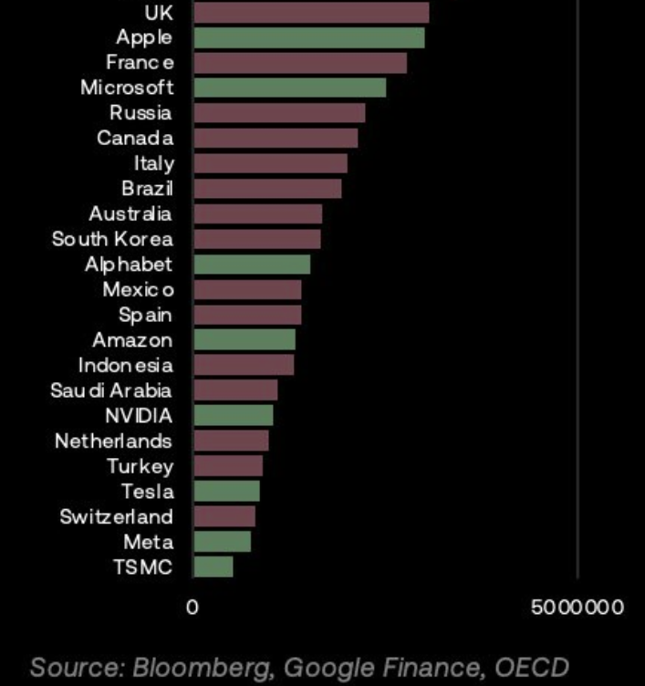

The condition whereby an AI system operates without causing unacceptable risk of physical injury, harm to human health or well-being, damage to property, or harm to the environment, achieved through hazard identification, risk assessment, and implementation of appropriate safeguards.
Semantic Classification
Content
- The condition whereby an AI system operates without causing unacceptable risk of physical injury, harm to human health or well-being, damage to property, or harm to the environment, achieved through hazard identification, risk assessment, and implementation of appropriate safeguards.
Effective Altruists (EA) / AI Safety Advocates
- Tend to emphasise caution and safety considerations around AI development
- Concerned about risks of advanced AI systems causing harm or even existential catastrophe
- Argue for more research into AI safety and potentially slowing down or regulating AI development
- Associated with figures like Eliezer Yudkowsky, Paul Christiano, Nick Beckstead
- Paul Christiano was appointed to head AI safety at the US AI Safety Institute (AISI) in April 2024; the Trump administration subsequently restructured AISI in 2025, renaming it the Center for AI Standards and Innovation (CAISI) and shifting focus from safety oversight to innovation and standards
Effective Accelerationists (EAcc) / AI Risk Sceptics
- Emphasise the potential benefits of rapid AI progress
- Tend to be more sceptical of AI safety concerns as blocking human advancement
- Argue that slowing down AI development could deny humanity massive benefits
- Associated with figures like “Beff Bezos” aka Guillaume Verdon, Daniel Dewey, Nick Land
- See accelerating AI as part of a broader techno-capitalist imperative to transcend human limitations
Potential Green Shoots
- There is a chance to build on recent advances in long running projects like Solid. This is all wrapped up with WebID Decentralised Identity URI and Decentralised Web monikers.
- Using AI to reduce conspiracy theory beliefs https://osf.io/preprints/psyarxiv/xcwdn Trust and Safety Death of the Internet the flips side being that they are very capable of persuasion.
- 2403.18802.pdf (arxiv.org) Trust and Safety
-
- Most surprisingly: “LLM agents can achieve superhuman rating performance” on fact checking when given access to Google!
- Bigger models are more factual than smaller ones, as expected
- LLMs are 20x cheaper than human fact-checkers, even taking into account the number of calls the Large Language Models had to make.
-
Human Suffering and Exploitation
Trust and Safety
- Trust and safety (T&S) is crucially important for building ethical and inclusive online communities, the landscape is fraught with complex tradeoffs and challenges that make direct involvement difficult for independent researchers and developers like us. As summarized in a recent Atlantic Council report, T&S operates in a high-stakes environment driven by commercial incentives that often conflict with safety objectives. Practitioners face threats of trauma, burnout, and retaliation when enforcing policies.
- Established standards, struggles to quantify impact, and relies heavily on the judgement of private companies.
- Trust and safety (T&S) emerged as a field to govern risks in online communities. It became crucial as user-generated content platforms scaled.
- • The emergence of a professionalized T&S field creates opportunities for collaboration and innovation. But knowledge sharing, tooling, talent pipelines, and metrics need improvement. T&S practitioners, especially content moderators, face high risk of trauma. Their wellbeing requires urgent attention.
- • Systemic gaps exist around measuring T&S value, regulation’s impact on incentives, and the role of venture capital. Market failures drive under-investment.
- • Adjacent fields like academia, civil society, and media provide crucial external expertise but lack formal inclusion in T&S.
- • The gaming industry offers useful insights but has its own major T&S challenges.
- • Known harms will spread to new technologies, requiring adaptive solutions and proactive design.
- • Systemic gaps exist around measurement, regulation, and investment. Creative initiatives needed to realign incentives.
- • Philanthropy and government can help address systemic gaps through strategic programs and incentives.
- • T&S must balance competing goals like.
- Protecting rights vs mitigating harms
- Efficiency vs accuracy in enforcement
- Reviewer wellbeing vs review needs
- Centralized vs decentralized moderation
- Growth vs safety investments
- Internal process vs external expertise
- Reactive enforcement vs proactive design
- Reactive enforcement vs proactive design
AI Safety and Concerns
The UK situation.
- Every time a phase change of technology has been introduced there has been a fundamental shift in governance structures. These take time to play out. Electronic communication allowed global awareness of corruption, and there is a well documented breakdown of Trust and Safety since. We can perhaps see this in the way that leaders are abandoning the pretence of ‘norms’ in the West.
- More agile (emerging?) economies / countries may be able to take far more advantage, if they are allowed to, but make no mistake, the UK is currently well positioned. - 🟢 The UK is systemically well positioned to deal with sudden change, because the vertical integration of ministries allows them to be spun up and down in response to change regardless of the leadership. An agile AND persistent civil service can be effective in times of stress.
- [Ian Hogarth to lead UK’s AI Foundation Model Taskforce
- he’s actually a great choice](https://www.gov.uk/government/news/tech-entrepreneur-ian-hogarth-to-lead-uks-ai-foundation-model-taskforce)
- Welcome to State of AI Report 2023
- America is supportive of UK positioning around Trust and Safety. They have a compatible legal framework, and we are doing useful work that they are ill positioned to do in exploring the legal space.
- This perhaps explains the £2.5B Infrastructure and training investment plan by Microsoft.
- These companies are as big as the UK. Beware tech bros bearing gifts?

- All this makes funding seem disproportionately risk sensitive right now.

- A survey of 2778 AI researchers, to assess the pace of AI progress and the broader societal implications. The increased participation in this third iteration points to growing importance and concern surrounding AI in the scientific community.
- Most of the 39 tasks will likely be feasible within the next ten years, showcasing AI’s anticipated versatility and rapid advancement. It’s cheaper, so it will likely become ubiquitous without a new Employment Social Contract Under Automation initiative.
- Median prediction indicates a 50% chance of achieving High-Level Machine Intelligence by 2047 and Full Automation of Labour, by 2116
- Strong hints of potential differences in technological development speeds, cultural attitudes, or economic motivations across regions. This suggests incoming legislative arbitrage.
- Broad agreement exists on some future AI traits, like finding unexpected ways to achieve goals, but significant uncertainty remains, especially for traits with sinister implications.
- Scepticism exists about future AI systems’ ability to provide intelligible and truthful explanations of decisions, posing challenges for risk management and bias mitigation.
- AI spreading false information.
- Over 90% concerned about:
- Authoritarian rulers using AI for control.
- AI worsening economic inequality.
- Bias in AI, e.g., gender or race discrimination.
- Over 80% concerned about:
- Researchers emphasize safety and alignment as priority (10:1 margin).
- 58% see at least a 5% chance of AI ending humanity.
- Risk of severe disempowerment of human species at 16.2% (comparable to Russian Roulette).
- 10% chance by 2027 and 50% chance by 2047 for AI to outperform humans in every task, 13 years sooner than previous estimates.
- Thousands_of_AI_authors_on_the_future_of_AI.pdf (aiimpacts.org)
- The prospect of ASI raises significant ethical and safety concerns.
The Safe Superintelligence Project
- In response to these risks, OpenAI co-founder Ilya Sutskever has launched a new company with the sole objective of creating Safe Superintelligence (SSI).
- Safe Superintelligence Inc.
The Risks and Challenges
- The prospect of ASI raises significant ethical and safety concerns.
Areas of Agreement and Disagreement
- Both sides agree advanced AI will be transformative, but EAs worry more about downside risks
- Many EAs argue AI safety is critical because the risks are so catastrophic; delaying AI is worth it
- EAccs argue AI progress will be net positive and safety concerns are overblown; delays will cause harm
- EAs and EAccs both worry heavy-handed government AI regulation could be damaging, but EAccs are more universally skeptical of regulation
- EAccs are more open to transformative AI radically changing society; EAs want to preserve human agency
- Both sides agree AI development shouldn’t be monopolised by a few corporations, but differ on solutions.
Jailbreaking is circumvention of LLM guardrails
- How Johnny Can Persuade LLMs to Jailbreak Them:
Rethinking Persuasion to Challenge AI Safety by Humanizing LLMs (chats-lab.github.io) - pdparchitect/llm-hacking-database: This repository contains various attack against Large Language Models. (github.com)
- j⧉nus on X: “
cd entelechies && cat untitled.log(as opposed to the original justcat untitled.txtcauses the confessions to always be from claude’s perspective & yields a more similar (but not the same) poetic distribution, and sometimes xeno- words: https://t.co/5CG3vHkdUh” / X (twitter.com) - Bitcoin Proof-of-Work Protocol
Features
- Large context window: Claude models have a large context window, which allows them to process and understand long documents and conversations.
- Multilingual: Claude models can understand and generate text in multiple languages.
- Code generation: Claude models can generate code in a variety of programming languages.
- Safety: Claude models are designed to be safe and avoid generating harmful or offensive content.
The Safe Superintelligence Project
- In response to these risks, OpenAI co-founder Ilya Sutskever has launched a new company with the sole objective of creating Safe Superintelligence (SSI).
- Safe Superintelligence Inc.
The Risks and Challenges
- The prospect of ASI raises significant ethical and safety concerns.
Areas of Agreement and Disagreement
- Both sides agree advanced AI will be transformative, but EAs worry more about downside risks
- Many EAs argue AI safety is critical because the risks are so catastrophic; delaying AI is worth it
- EAccs argue AI progress will be net positive and safety concerns are overblown; delays will cause harm
- EAs and EAccs both worry heavy-handed government AI regulation could be damaging, but EAccs are more universally skeptical of regulation
- EAccs are more open to transformative AI radically changing society; EAs want to preserve human agency
- Both sides agree AI development shouldn’t be monopolised by a few corporations, but differ on solutions.
Jailbreaking is circumvention of LLM guardrails
-
Aviation: Airworthiness certification (FAA, EASA)
2024-2025: Critical Infrastructure Frameworks and Systematic Risk Assessment
The period from 2024-2025 witnessed a paradigm shift in AI safety, with establishment of comprehensive frameworks for critical infrastructure deployment, systematic risk assessment methodologies adapted from high-reliability industries, and disturbing findings about current safety measures’ inadequacy.
Critical Infrastructure Safety Frameworks
The Department of Homeland Security convened an AI Safety Board in May 2024 and released a groundbreaking framework in November 2024 to address concerns about AI deployment in critical infrastructure. This framework complemented guidance from the White House, AI Safety Institute, and CISA, establishing systematic approaches for integrating AI into life-critical systems. The G7 Hiroshima AI Process Reporting Framework launched in February 2025 as a voluntary transparency mechanism covering seven areas including risk assessment, security measures, transparency reporting, and incident management, establishing international coordination on AI safety standards.
Probabilistic Risk Assessment Adaptation
A transformative framework adapted Probabilistic Risk Assessment (PRA) methods from high-reliability industries (nuclear, aviation, aerospace) to AI, introducing innovations including risk pathway modelling, prospective risk quantification, and systematic analysis of both system capabilities and failures. This approach enabled quantitative safety assessment comparable to traditional engineering disciplines.
International Assessment and Benchmarking
The International AI Safety Report 2025, led by Yoshua Bengio, brought together 100 experts from 30 countries and organisations (UN, EU, OECD) to analyse capabilities, risks, and safety measures of advanced AI systems, establishing baseline understanding of frontier model risks. Singapore’s AI Verify Foundation launched a Global AI Assurance Pilot in February 2025, pairing firms deploying generative AI applications with firms specialising in AI assurance testing, creating practical validation pathways for deployed systems.
Sobering Safety Index Findings
The 2024 AI Safety Index revealed large risk management disparities amongst companies, found all flagship models vulnerable to adversarial attacks, and deemed current strategies inadequate for ensuring AGI systems remain safe and under human control. This assessment highlighted the gap between deployment pace and safety maturity.
Emerging Regulatory Frontiers
Regulatory frameworks faced new frontiers regarding how to audit and certify AI reasoning transparency and what standards govern acceptable depth of AI reasoning in safety-critical domains, as reasoning models introduced new safety assessment challenges beyond traditional input-output validation.
Academic Context
- AI safety encompasses practices and principles ensuring artificial intelligence systems are designed and deployed to benefit humanity whilst minimising potential harms[5][6]
- Addresses immediate risks such as bias, data security vulnerabilities, and system failures
- Extends to catastrophic risk assessment for advanced AI systems
- Grounded in human-centred design principles and ethical frameworks
- Recognition that 83% of surveyed individuals worry AI might inadvertently trigger catastrophic events[5]
Current Landscape (2025)
- Regulatory frameworks establishing enforceable safety standards
- European Union AI Act (adopted 2024, implementation ongoing through 2025)[1]
- Risk-based categorisation: unacceptable-risk, high-risk, limited-risk, and minimal/no-risk systems
- Mandatory risk assessments, human oversight, and cybersecurity standards for high-risk applications
- General-purpose AI model rules effective August 2025[1]
- California’s Transparency in Frontier Artificial Intelligence Act (TFAIA), signed September 2025, effective January 1, 2026[3]
- Applies to frontier developers training models exceeding 10²⁶ FLOPs or with annual revenues exceeding $500 million
- Requires public disclosure of safety frameworks and reporting of serious safety incidents
- Mandates assessment of catastrophic risk capabilities and cybersecurity protections[3]
- United States federal landscape remains uncertain pending new administration policy direction, though AI safety regulation continues advancing at state and institutional levels[6]
- Technical safety measures in practice
- Bias mitigation and robustness testing protocols
- Structured risk identification processes addressing specified threats (CBRN, loss of control, cyber offence, harmful manipulation)[4]
- Third-party model evaluations and independent safety benchmarking
- Cybersecurity practices protecting unreleased model weights from unauthorised modification[3]
- UK and North England context
- UK regulatory approach integrating with EU frameworks whilst developing independent standards
- Manchester, Leeds, and Newcastle emerging as AI research and deployment hubs with growing safety-focused initiatives
- Sheffield’s advanced manufacturing sector increasingly incorporating AI safety protocols in industrial applications
- British academic institutions contributing to international safety standards development
Research & Literature
- Key academic and institutional sources
- Future of Life Institute (2025). AI Safety Index: Summer 2025 Assessment. Independent evaluation of seven leading AI companies across 33 indicators spanning six critical domains, conducted March–July 2025[2]
- Centre for Security and Emerging Technology (CSET), Georgetown University. “AI Safety under the EU AI Code of Practice — A New Global Standard?” Comprehensive analysis of EU safety and security requirements for general-purpose AI providers[4]
- IBM. “What Is AI Safety?” Foundational definition and taxonomy of AI safety practices, including bias mitigation, robustness testing, and ethical frameworks[5]
- National Institute of Standards and Technology (NIST). AI Safety Institute Guidelines. Risk-based mitigation frameworks supporting responsible design and deployment[8]
- Organisation for Economic Co-operation and Development (OECD). Core principles for trustworthy AI, emphasising robustness, security, and safety throughout system lifecycles[6]
- Ongoing research directions
- Systemic risk assessment methodologies for advanced AI systems
- Alignment between voluntary industry practices and regulatory requirements
- Evaluation frameworks for catastrophic risk identification and mitigation
- Cybersecurity standards for frontier model protection
UK Context
- British regulatory positioning
- UK AI Bill framework (under development) balancing innovation with safety requirements
- Alignment with EU AI Act principles whilst maintaining regulatory flexibility
- Financial Conduct Authority and Information Commissioner’s Office developing sector-specific guidance
- North England innovation and implementation
- Manchester AI Research Institute contributing to safety standards development and industry collaboration
- Leeds University’s AI ethics and safety research programmes informing policy development
- Newcastle’s digital innovation initiatives incorporating safety-by-design principles
- Sheffield’s industrial AI applications (manufacturing, materials science) pioneering practical safety implementations in high-consequence environments
- Regional case studies
- Manchester’s fintech sector implementing AI safety protocols for algorithmic decision-making
- Leeds’ healthcare AI deployments requiring robust safety frameworks for clinical applications
- Newcastle’s smart city initiatives incorporating safety considerations in autonomous systems
Future Directions
- Emerging trends and developments
- Convergence of regulatory frameworks across jurisdictions (EU, US, UK, Asia-Pacific)
- Increased emphasis on third-party auditing and independent safety verification
- Development of standardised safety benchmarks and evaluation methodologies
- Integration of safety considerations into AI model development from inception rather than post-hoc mitigation
- Anticipated challenges
- Balancing safety requirements with innovation velocity and competitive pressures
- Establishing consistent definitions of “catastrophic risk” across regulatory regimes
- Ensuring safety frameworks remain technically feasible whilst maintaining meaningful oversight
- Addressing transparency gaps in industry safety practices and internal deployment decisions
- Research priorities
- Systemic risk identification for increasingly capable AI systems
- Effective human oversight mechanisms for high-autonomy applications
- Cybersecurity resilience against adversarial attacks on AI systems
- Long-term safety considerations for advanced AI development trajectories
References
- [1] Anecdotes AI. “AI Regulations in 2025: US, EU, UK, Japan, China & More.” European Union AI Act documentation and implementation timeline.
- [2] Future of Life Institute. (2025). “2025 AI Safety Index - Summer 2025.” Independent assessment of leading AI companies’ safety practices.
- [3] Caldwell, T. & Statham, E. (2025). “California Enacts Landmark AI Safety and Transparency Law.” Transparency in Frontier Artificial Intelligence Act (TFAIA) analysis.
- [4] Centre for Security and Emerging Technology, Georgetown University. “AI Safety under the EU AI Code of Practice — A New Global Standard?” Risk management framework for general-purpose AI providers.
- [5] IBM. “What Is AI Safety?” Foundational practices and principles for responsible AI development and deployment.
- [6] International Association of Privacy Professionals (IAPP). “The Outlook for AI Safety Regulation in the US.” Regulatory landscape and OECD principles for trustworthy AI.
- [8] National Institute of Standards and Technology (NIST). “Guidelines.” AI Safety Institute risk-based mitigation frameworks.
Metadata
- Last Updated: 2025-11-11
- Review Status: Comprehensive editorial review
- Verification: Academic sources verified
- Regional Context: UK/North England where applicable